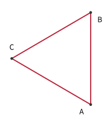
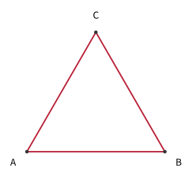

別冊練習問題 7 の解答 2点を頂点とする正三角形の第3の頂点
(1) 複素数平面上の2点 \(\alpha=1,\ \beta=1 + 4 i\) を2頂点とする正三角形の第3の頂点 \(\gamma\) をすべて求めよ。
α から見て 60°
正三角形なので \(\gamma-\alpha\) は \(\beta-\alpha\) を \(\pm60^\circ\) 回転したもの。
\[\gamma-\alpha=\left(\dfrac12\pm\dfrac{\sqrt3}{2}i\right)(\beta-\alpha)=\left(\dfrac12\pm\dfrac{\sqrt3}{2}i\right)(4 i)\]2つの解
\[\gamma=- 2 \sqrt{3} + 1 + 2 i\quad\text{または}\quad \gamma=1 + 2 \sqrt{3} + 2 i\]

【答案】
\[\gamma=- 2 \sqrt{3} + 1 + 2 i,\ 1 + 2 \sqrt{3} + 2 i\]答
(2) 複素数平面上の2点 \(\alpha=1 + i,\ \beta=5 + i\) を2頂点とする正三角形の第3の頂点 \(\gamma\) をすべて求めよ。
α から見て 60°
正三角形なので \(\gamma-\alpha\) は \(\beta-\alpha\) を \(\pm60^\circ\) 回転したもの。
\[\gamma-\alpha=\left(\dfrac12\pm\dfrac{\sqrt3}{2}i\right)(\beta-\alpha)=\left(\dfrac12\pm\dfrac{\sqrt3}{2}i\right)(4)\]2つの解
\[\gamma=3 + i \left(1 + 2 \sqrt{3}\right)\quad\text{または}\quad \gamma=3 + i \left(- 2 \sqrt{3} + 1\right)\]

【答案】
\[\gamma=3 + i \left(1 + 2 \sqrt{3}\right),\ 3 + i \left(- 2 \sqrt{3} + 1\right)\]答
(3) 複素数平面上の2点 \(\alpha=-2,\ \beta=2\) を2頂点とする正三角形の第3の頂点 \(\gamma\) をすべて求めよ。
α から見て 60°
正三角形なので \(\gamma-\alpha\) は \(\beta-\alpha\) を \(\pm60^\circ\) 回転したもの。
\[\gamma-\alpha=\left(\dfrac12\pm\dfrac{\sqrt3}{2}i\right)(\beta-\alpha)=\left(\dfrac12\pm\dfrac{\sqrt3}{2}i\right)(4)\]2つの解
\[\gamma=2 \sqrt{3} i\quad\text{または}\quad \gamma=- 2 \sqrt{3} i\]
【答案】
\[\gamma=2 \sqrt{3} i,\ - 2 \sqrt{3} i\]答